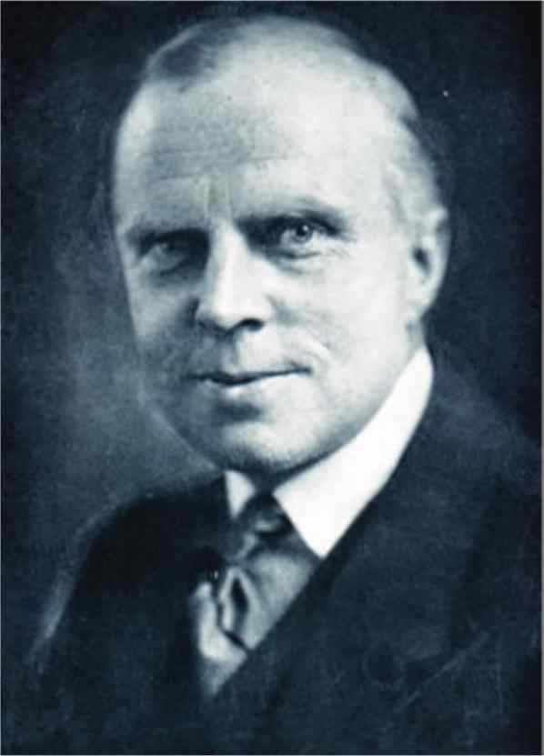
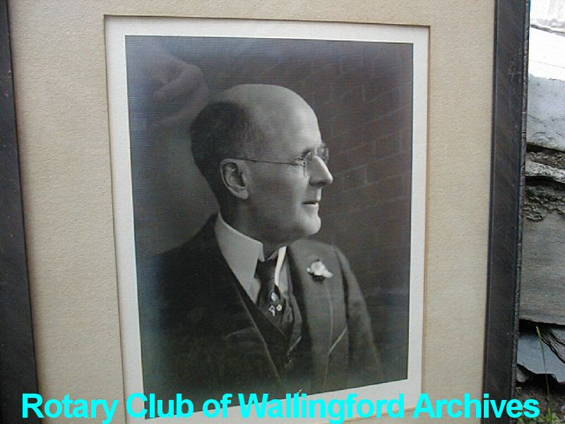
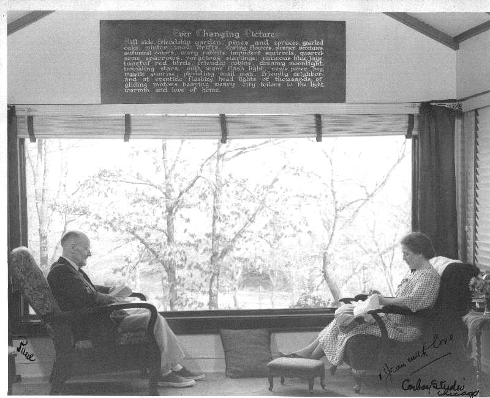
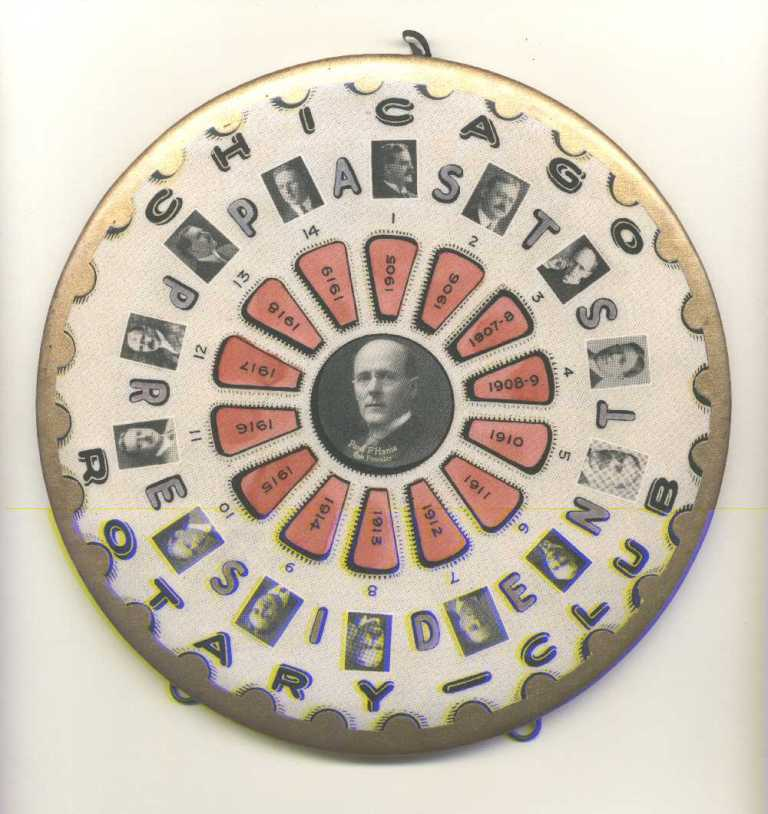
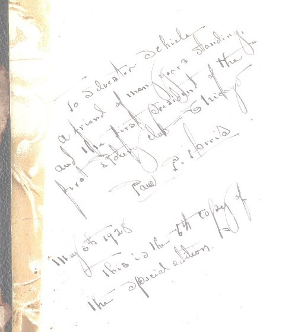
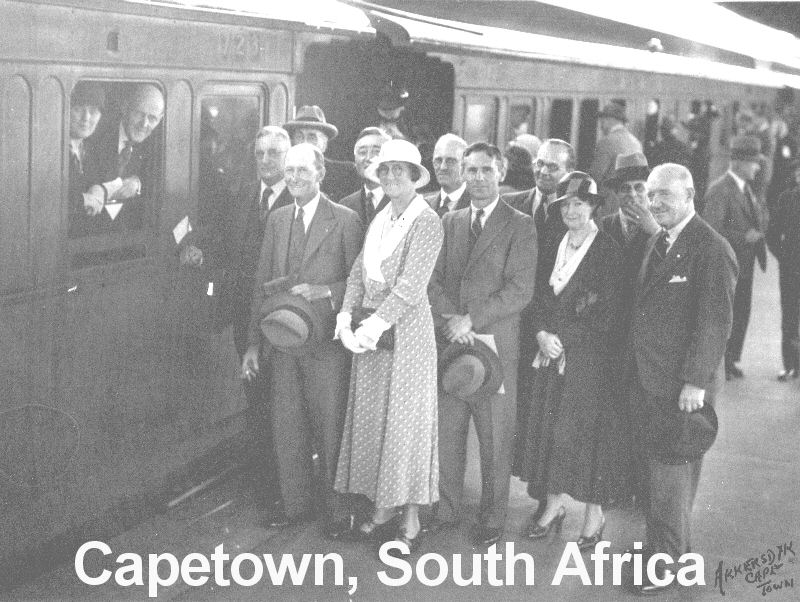
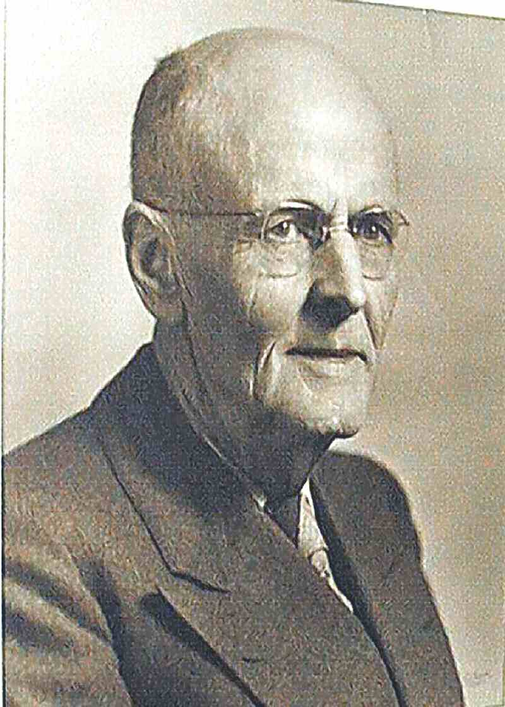

|
|
| SEARCH |
The Romance of Rotary In London |
| IN MEMORY OF PAUL P.
HARRIS, FOUNDER OF ROTARY By Vivian Carter |
|
|
Vivian
Carter was the author of, "The Romance of Rotary In London" published in
1947. He had served as secretary of Rotary International in
Great
Britain and Ireland from 1921-1928 and then left for Chicago where
he became the the second editor of The Rotarian, following the
publication's founder and Rotary's first secretary Chesley R. Perry.
Carter was the editor until 1935. Carter writes that he had a great deal
of contact with Harris. Both as secretary of R.I.B.I and also as the
magazine's editor. Though many Rotarians, primarily in the UK, have
Carter's book on Rotary, it is a rare. We are fortunate to have Carter's
observations. There has been much written about Paul Harris, the founder of Rotary, but a careful reading of what Vivian Carter has to say will give Rotarians a good measure of the man who, at the right moment, was the inspiration for Rotary. In addition to Carter's insightful, firsthand recollections, there are links at the bottom of this page leading to many other tributes and memorials to this modest man from Wallingford. Jack M. B. Selway, Founder Rotary Global History In Memory of Paul P. Harris, by Vivian Carter From "The Romance of Rotary In London." Almost on the very day on which the foregoing pages were being passed to the printers came the news on the morning radio bulletin that Paul Harris, Founder of Rotary, had passed away in his 79th year. Some remarks additional to those very briefly made in Chapter I may not be out of place from the author, who may claim to have enjoyed, during his almost yearly visits to Chicago as Secretary of R.I.B.I., and his residence there as Editor of The Rotarian, a very intimate relationship with a personality around whom a certain mystery persists in clinging, which, as the years go on, will inevitably shape into a myth. About the man himself, I never met a celebrity less conscious of being one, or less concerned to live up to the tradition woven around him. Paul, and his charming, fresh‑complexioned, smiling Scottish wife, lived at Morgan Park, a wooded outskirt fourteen miles southwest of Chicago and far from its madding crowds. Like the homes of so many other founders of great movements, that of Paul and Mrs. Harris was of the simplest, most tasteful and comfortable that could be desired. A fancy of his was to sit in a dark corner and listen, and talk ‑ when drawn out ‑ slowly, deliberately and reservedly on almost any topic raised. His philosophy ‑ strange as it may seem to those who associate Rotary with flamboyance and exuberant optimism ‑ was that of a skeptic, and I never succeeded in extracting from him an exact statement of his religious faith. He gave no encouragement whatever to suggestions, freely made in the twenties, on both sides of the Atlantic, that Rotary was a "spiritual" movement in some way linked up with the churches. No man was fonder of a joke, or fuller of amusing recollections, and his memories of Rotary were memories of an infinite number of personal friends. If Chicago still deserves its reputation for "hustle," none of its citizens lived up to it less than the founder of Rotary, whose movements, like his speech, were slow, quiet, and unobtrusive. Though one could place him more easily in an old‑world English village than the mid‑western American metropolis, Paul Harris was immensely proud of Chicago and its phenomenal growth during his long lifetime, and would not stand for slighting remarks at its expense. The suggestion that Rotary might move its home elsewhere was not one he favoured, and it has not been carried out in his lifetime, anyway. Personally I hope it will not be; for if Rotary is a good thing, why transplant it from its place of origin? |
Of Paul Harris,
there is one outstanding thing to be said; he never forgot a friend,
never failed to respond to a request for help or advice. He put himself
to endless pains to help the visitor, especially if it had to do with
finding opportunities for service or a house-room in Chicago. He was
generous to a fault with letters of introduction, and wrote them in his
own handwriting. As to the perennial question touched on the first chapter of the book, the true origin of Rotary, and whether its Founder ever foresaw its world‑wide development, he admitted frankly that it was primarily a fellowship that he conceived the original club. "I was always a great lover of fun, he said, and got an ecstatic joy out of contacts with others. But such things were spontaneous and not part of my serious purpose with Rotary. My sense of the ethical possibilities began to develop early in my experience of fellowship and the fun of the thing, in which I reveled. I numbered among my intimate friends Arthur Sheldon, founder of the School of Business Science, one of the earliest to propagate that Service must be the foundation of all true success in business, and I was influenced by him to some extent. I very soon began to realise that, in the Rotary organisation, we could paint the picture that existed so far only in a sketch." Nothing can rob Paul Harris of the credit for the geographical extension of Rotary, for he it was, beyond a doubt, who formed the clubs on the Pacific Coast that were the first to follow Chicago. As is briefly recorded in the book, it was in that more critical atmosphere that the early crudities of the movement were rounded off, and its latent ethical purposes gradually evolved that ultimately became paramount. As Harris put it in the same conversation: "When it was made known to the world that Rotary was an ethical movement, the true significance of the classification system was realised as it had not been before. We had made a piece of machinery of which we had not foreseen what would be the ultimate use. When we saw it, that the classified man in Rotary should be the interpreter of the ideal of service above self in business and profession, we sought to widen our area in every direction, to get as many clubs as we could organise. When the clubs began to be formed in other countries, then it was seen we had yet a greater mission ‑ as between nation and nation, people and people, and so it is now developing." Of late years Paul Harris had been somewhat of a shadowy figure in Rotary, delivering regularly every year a "Message" to the Convention, through a spokesman, and on occasion only appearing in person. He visited Europe once or twice, and never enjoyed anything more, I believe, than his quiet rambles in rural England, and especially Dickens's England ‑and London. For one reason only am I consoled that he passed away before paying our city a revisit, and that is because it would surely have broken his heart to see the Temple and some of the Inns in which he, as a lawyer, loved to wander and to meditate, the heap of rubble they are today. It is to be hoped that the memory of this simple, lovable man, who "showed himself friendly" to all with whom he came into contact, will be fittingly honoured by the movement he founded that men the wide world over may spread his ideals of fellowship and service among all the nations, and that London will not fail to play her full part in that tribute. Vivian Carter, Author of, "The Romance of Rotary In London" Secretary Of R.I.B.I. 1921-1928 The actual pages of "Romance of Rotary in London" in our library Text scanned by Wolfgang Ziegler Photographs of Courtesy of Rotary Club of Wallingford Vermont, Scanned by Matts O. Ingemanson |
RGHF members, who have been invited to this page, may register RGHF members, who have been invited to this page, may register If a DGE/N/D joins prior to their year, they will have more exposure to Rotary's Global History by their service year. This will be beneficial to all concerned. *Based on paid members, subscribers, Facebook friends, Twitter followers, mobile app users, History Library users, web pages, and articles about Rotary's Global History RGHF Home | Disclaimer | Privacy | Usage Agreement | RGHF on Facebook | Subscribe | Join RGHF | |
{kind=link}
{kind=link}
{kind=link}
{kind=link}
{kind=link}
{kind=link}
{kind=link}